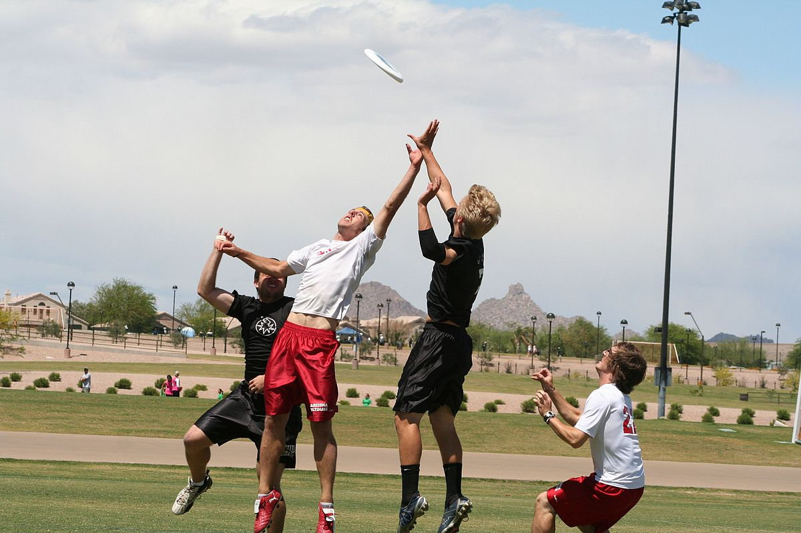
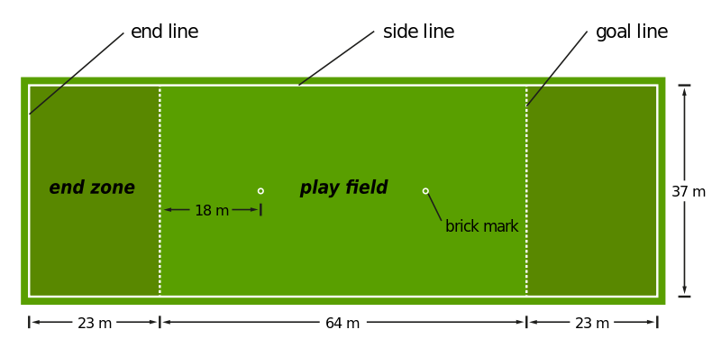
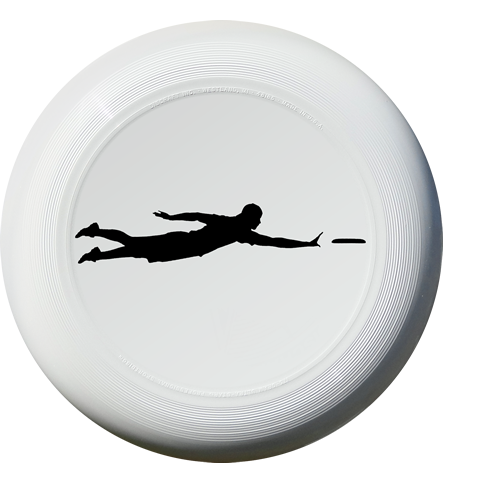

El ultimate frisbee es un deporte de equipo sin contacto y auto arbitrado que se juega con un disco volador llamado frisbee.
Dos equipos de siete jugadores compiten en un campo de juego de aproximadamente la misma longitud que un campo de fútbol, pero más estrecho. En cada extremo del campo de juego hay una zona de gol de 18 x 37 m. Cada equipo defiende una zona de ensayo. Marcan un gol si uno de sus jugadores atrapa el disco en la zona final que defiende el equipo contrario. Este deporte en lugar de con un balón se juega con un frisbee.
El jugador con el disco se llama el lanzador. El lanzador no puede correr con el disco. En cambio, se puede mover el disco pasando a sus compañeros de equipo en cualquier dirección.
El equipo defensivo obtiene la posesión del disco si un jugador del equipo que ataca no atrapa el pase de un compañero. Entonces el equipo defensivo se convierte en el equipo ofensivo y puede intentar anotar en la zona de anotación opuesta.
El objetivo del juego es llegar al marcador objetivo antes que el rival o ser el equipo con más goles marcados al término del tiempo. Se caracteriza principalmente por la ausencia de árbitros y por su principio de “espíritu de juego” que deja en virtud de los propios jugadores el aplicar el reglamento de forma honesta y deportiva.
El terreno de juego es rectangular de césped natural o artificial, de 100 metros de largo × 37 metros de ancho, con una zona de anotación a cada lado del campo.
El organismo rector es la Federación Mundial del Disco Volador (WFDF por sus siglas en inglés), fundada en 1985, está a cargo de eventos como campeonatos mundiales, normativas y reglamento del juego.

Foto de Devon Hollahan disponible en Wikimedia Commons.jpg){kind=link}
Area de juego

Foto de Gustavb tomada de Wikimedia Commons
{kind=link}
Disco reglamentario 175 gramos

Foto de Balonmano Titanes disponible en Wikimedia Commons
{kind=link}